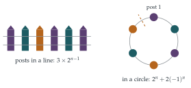

STEP II 1995, Question 2
Read the question before you go on. It is in the STEP Support Programme’s question database: step.maths.org/questions/95-s2-q2
The hook
Painting posts in a line is easy: \(3\) choices for the first, then \(2\) for each of the rest (anything but the colour of the previous post), giving \(3 \times 2^{n-1}\). Bend the line into a circle and it becomes surprisingly awkward, because the last post now has to differ from the first as well as from its neighbour, and whether that rules out one colour or none depends on everything that came before.
The question gets round this with a classic trick: split the count into cases according to the colour of the last post, and find how the cases feed into each other. The answer, \(2^n + 2(-1)^n\), is the first example of a chromatic polynomial, part of the mathematics behind the four colour theorem.
Before you start
Count the ways to paint \(3\) posts in a circle, and \(4\). Does \(3 \times 2^{n-1}\) overcount, and by how much?
Three posts in a circle are all adjacent to each other, so they need three different colours: \(3! = 6\) ways. Four posts in a circle: \(18\) ways (you can check this at the end). Compare \(3 \times 2^2 = 12\) and \(3 \times 2^3 = 24\) for the line: the circle loses the colourings in which the last post matches the first.
Working it through
Stage 1 Two kinds of colouring
Take a colouring of \(n + 1\) posts with the first and last red. Remove the last post. What can you say about the colouring of the first \(n\) posts that remains?
Post \(n\) is next to post \(n + 1\), which is red, so post \(n\) is not red. Removing post \(n + 1\) leaves a colouring of \(n\) posts with the first red and the last not red: one of the \(s_n\) colourings. Conversely, any of the \(s_n\) colourings can be extended in exactly one way, by painting post \(n + 1\) red. So the two sets correspond exactly, and \(r_{n+1} = s_n\).
What is \(r_n + s_n\)?
Every colouring with the first post red has its last post either red or not, so \(r_n + s_n\) counts all colourings of \(n\) posts with the first red. After the first post, each post has \(2\) choices, so \(r_n + s_n = 2^{n-1}\). Hence \[r_{n+1} + r_n = s_n + r_n = 2^{n-1}. \qed\]
Stage 2 The formula by induction
For \(n = 1\) there is one post, painted red, so \(r_1 = 1\), and the formula gives \(\frac13(1 + 2) = 1\). Suppose the formula holds for \(r_n\). Then \[r_{n+1} = 2^{n-1} - r_n = 2^{n-1} - \frac{2^{n-1} + 2(-1)^{n-1}}{3} = \frac{2 \cdot 2^{n-1} - 2(-1)^{n-1}}{3} = \frac{2^n + 2(-1)^n}{3},\] which is the formula for \(r_{n+1}\).■
Where did the formula come from? The recurrence \(r_{n+1} + r_n = 2^{n-1}\) is like a differential equation: a “particular solution” \(c \cdot 2^n\) plus a “complementary function” \(A(-1)^n\) that solves \(r_{n+1} + r_n = 0\). Find \(c\) and \(A\).
Stage 3 The circle
In a circle of \(n\) posts, fix the colour of post \(1\), say red. Now cut the circle between post \(n\) and post \(1\), and straighten it into a line. Which of the line colourings correspond to valid circle colourings?
Straightened out, the circle becomes a line of \(n\) posts starting with red, in which the last post must also differ from post \(1\): the last post is not red. These are exactly the \(s_n\) colourings. Post \(1\) can be any of \(3\) colours, so the number of circle colourings is \[3s_n = 3(2^{n-1} - r_n) = 3 \cdot 2^{n-1} - 2^{n-1} - 2(-1)^{n-1} = 2^n + 2(-1)^n. \qed\] Check: \(n = 3\) gives \(8 - 2 = 6\), and \(n = 4\) gives \(16 + 2 = 18\).

Looking back
Split into cases that feed each other. Recording whether the last post was red gave two sequences, \(r_n\) and \(s_n\), linked by simple recurrences.
Bijections. \(r_{n+1} = s_n\) was proved by matching colourings one-to-one, not by calculation.
Cut the circle. A cyclic problem became a linear one with a condition on the ends.
What’s really going on
Chromatic polynomials
The posts and their adjacencies form a graph: a path for the line, a cycle for the circle. A proper colouring gives adjacent vertices different colours. The number of proper colourings with \(k\) colours is a polynomial in \(k\), the chromatic polynomial of the graph, introduced by George Birkhoff in 1912. Repeating the question’s argument with \(k\) colours gives \[\text{path: } k(k - 1)^{n-1}, \qquad \text{cycle: } (k - 1)^n + (-1)^n(k - 1).\] With \(k = 3\) the cycle formula is \(2^n + 2(-1)^n\). Birkhoff hoped to prove the four colour theorem (every map can be coloured with four colours so that neighbouring countries differ) by showing that the chromatic polynomial of every map’s graph is positive at \(k = 4\). That approach never succeeded; the theorem was finally proved in 1976 by Kenneth Appel and Wolfgang Haken, with extensive computer help. Chromatic polynomials remain an active field, with surprising connections to statistical physics, where they appear as the Potts model of magnetism.
The same count by matrices
There is another way to see the answer, using linear algebra from Chapter 7. Let \(\mathbf{M}\) be the \(3 \times 3\) matrix with \(0\) on the diagonal and \(1\) elsewhere: entry \((i, j)\) is \(1\) when colour \(j\) may follow colour \(i\). Then entry \((i, j)\) of \(\mathbf{M}^{n-1}\) counts line colourings that start with colour \(i\) and end with colour \(j\), so \(r_n\) is a diagonal entry of \(\mathbf{M}^{n-1}\). A circle colouring is a sequence that returns to its start after \(n\) steps, so the number of circle colourings is the trace of \(\mathbf{M}^n\). Since \(\mathbf{M} = \mathbf{J} - \mathbf{I}\), where every entry of \(\mathbf{J}\) is \(1\), the eigenvalues of \(\mathbf{M}\) are \(3 - 1 = 2\) (eigenvector \((1, 1, 1)\)) and \(-1\) (twice), and the trace of \(\mathbf{M}^n\) is the sum of the \(n\)th powers of the eigenvalues: \[\operatorname{tr}\mathbf{M}^n = 2^n + (-1)^n + (-1)^n = 2^n + 2(-1)^n.\] This transfer matrix method is used throughout combinatorics and statistical physics to count arrangements built up one step at a time.
The thinking skill
When one sequence will not satisfy a simple recurrence on its own, record a little extra information (here, the colour of the last post) and find recurrences linking the cases.
This is the idea of a state: keep track of exactly what you need to know to continue, and nothing more. It is the basis of dynamic programming in computer science, of Markov chains in probability (Section 12.16), and of the transfer matrix method.
Try this next
\(k\) colours. Repeat the question with \(k\) colours. Show that \(r_{n+1} = s_n\) still holds and that \(r_{n+1} + r_n = (k-1)^{n-1}\), find \(r_n\), and deduce the chromatic polynomial of the cycle, \((k - 1)^n + (-1)^n(k - 1)\).
No two reds together. How many ways are there to paint \(n\) posts in a line red or white, with no two adjacent posts red? (You should find the Fibonacci numbers.)
A wheel. Add a central post adjacent to every post of the circle (a “wheel”). How many ways are there to colour it with \(4\) colours? (Hint: the centre uses one colour, and the circle must use the other three.)
Necklaces. If two colourings of the circle count as the same when one is a rotation of the other, how many different colourings are there for \(n = 4\)? For \(n = 5\)? (This is the start of Burnside’s lemma.)
Further reading
Robin Wilson, Introduction to Graph Theory (Pearson). The standard first course; covers colourings and the four colour problem.
Robin Wilson, Four Colours Suffice (Penguin). The story of the four colour theorem, for a general reader.
Herbert Wilf, generatingfunctionology (free online). Recurrences and how to solve them, including the transfer matrix method.